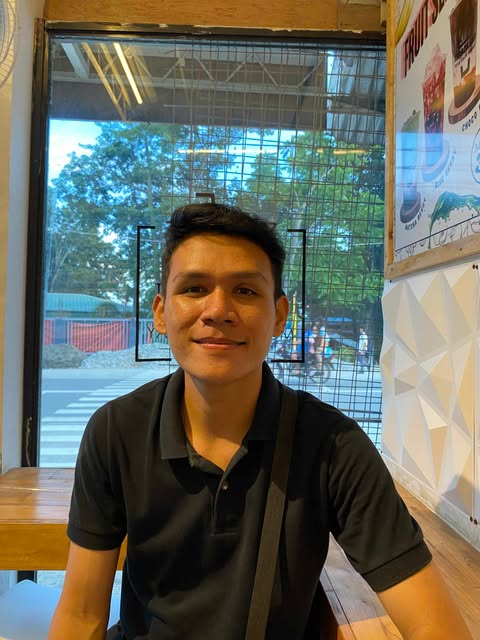

Cedric Rey Ignacio
Information Technology Student
Passionate about problem-solving, technology, and innovative solutions
Get in Touch

About Me
Hello! I'm Cedric Rey Ignacio, a 24-year-old student pursuing a Bachelor of Science in Information Technology at Northern Iloilo State University in Estancia, Iloilo. I am passionate about problem-solving, technology, and creating innovative solutions that can make a difference in the world.
Skills
Technical Skills
- Java
- Python
- JavaScript
- HTML/CSS
- React
- MySQL
- MongoDB
Soft Skills
- Problem-solving
- Critical Thinking
- Communication
- Team Collaboration
- Adaptability
Get in Touch
cedricreyignacio5@gmail.com
(+63) 9639888819